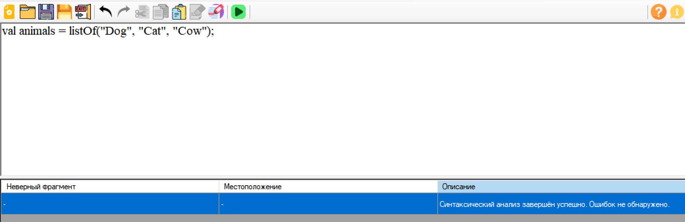
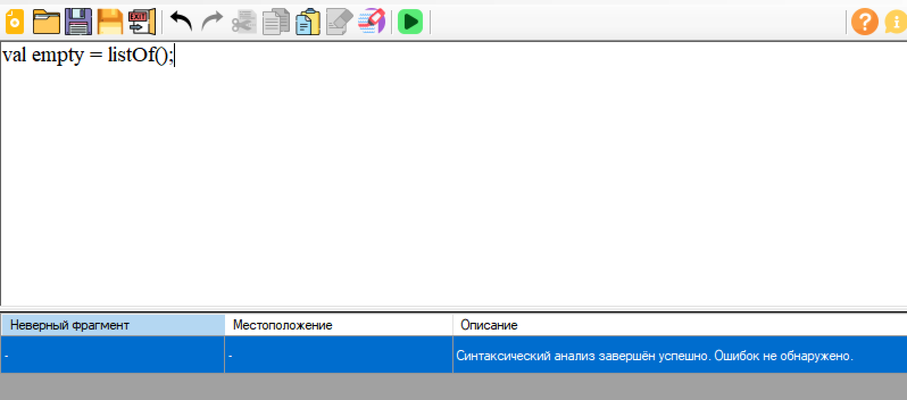
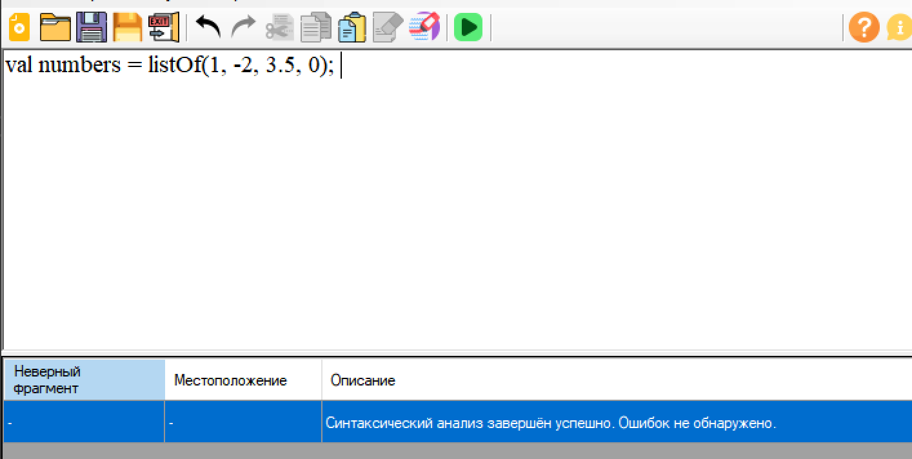
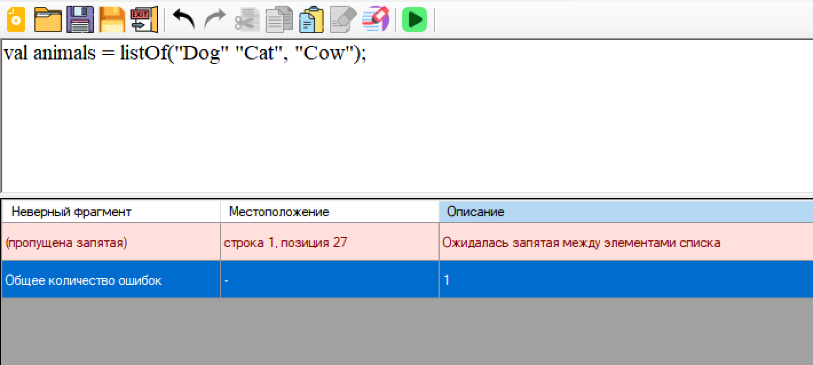
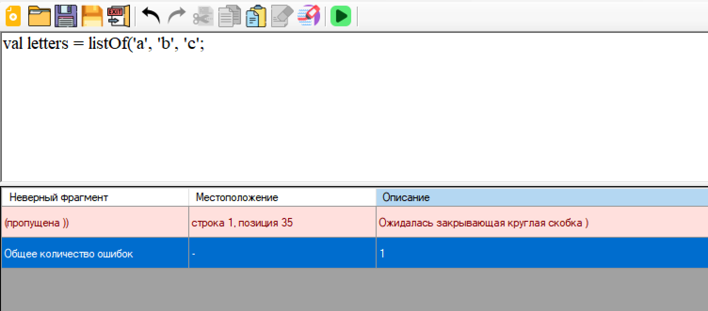
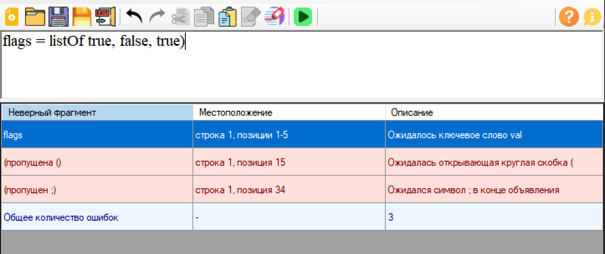

На рисунках 2–7 представлены тестовые примеры запуска разработанного синтаксического анализатора объявления списка с инициализацией на языке Kotlin.
1. val animals = listOf("Dog", "Cat", "Cow");

2. val empty = listOf();

3. val numbers = listOf(1, -2, 3.5, 0);

4. val animals = listOf("Dog" "Cat", "Cow");

5. val letters = listOf('a', 'b', 'c';

6. flags = listOf true, false, true)

Тестовые примеры подтверждают, что разработанный синтаксический анализатор корректно распознаёт допустимые конструкции объявления списка с инициализацией на языке Kotlin, а также выявляет основные синтаксические ошибки, связанные с нарушением структуры записи.